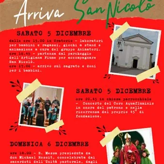

da sab 5 dic a dom 6 dic
Arriva San Nicolò
Festa del patrono San Nicolò con animazione per bambini e famiglie.
 Indicazioni
Indicazioni
- Costi e prenotazioni
- Costo non indicato · Prenotazione non indicata
- Programma
- Programma da verificare. Apri la fonte ufficiale per orari e possibili aggiornamenti.
- In caso di maltempo
- Nessuna indicazione specifica pubblicata.
- Note
- Acquisito automaticamente dalla fonte.
L’EVENTO
Descrizione completa
Sabato 5 dicembre
dalle ore 15.00 in Oratorio: laboratori per bambini e ragazzi, giochi a stand e animazione a cura del gruppo Animatori.
ore 16.45 partenza dal parcheggio dell’Artigiana Fiume per accompagnare San Nicolò
ore 17.00 arrivo sul sagrato e doni per i bambini
ore 20.45 in chiesa parrocchiale: Concerto del Coro Aquafluminis in onore del patrono e nella ricorrenza del proprio 45º di fondazione.
IN CASO DI MALTEMPO L’EVENTO SI SVOLGERÀ NEI LOCALI PARROCCHIALI Domenica 6 dicembre
ore 18.00 - S. Messa: presieduta da don Michael Rossit, concelebrata dai sacerdoti dell’Unità pastorale, dagli ex parroci, con la presenza dei gruppi parrocchiali, delle associazioni d’arma e di volontariato.
Informazioni:
Tel. 0434 959064
E-mail: parrocchia.sannicolo.fiumeveneto@gmail.com
IL PROGRAMMA
Programma e orari
Appuntamenti raccolti dalle fonti elencate. Dove manca un orario, non è ancora disponibile in questa scheda.
Programma pubblicato
- ore 16.45 partenza dal parcheggio dell’Artigiana Fiume per accompagnare San Nicolò
- ore 17.00 arrivo sul sagrato e doni per i bambini
- ore 20.45 in chiesa parrocchiale: Concerto del Coro Aquafluminis in onore del patrono e nella ricorrenza del proprio 45º di fondazione.
- ore 18.00 - S. Messa: presieduta da don Michael Rossit, concelebrata dai sacerdoti dell’Unità pastorale, dagli ex parroci, con la presenza dei gruppi parrocchiali, delle associazioni d’arma e di volontariato.
INFORMAZIONI UTILI
Prima di partire
- Controllare la fonte prima di partire.
ORGANIZZAZIONE